기미색소 컨택터Pigmentation Contactor
칙칙한 피부를 위한 프리미엄 솔루션
기미· 색소 개선과 광채 있는 피부의 비결은 수분 공급 및 항산화 작용에 있습니다.
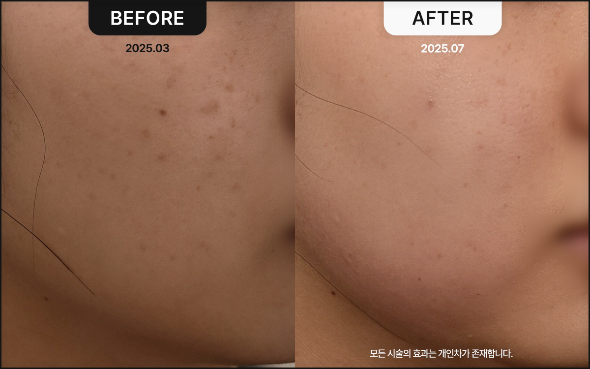
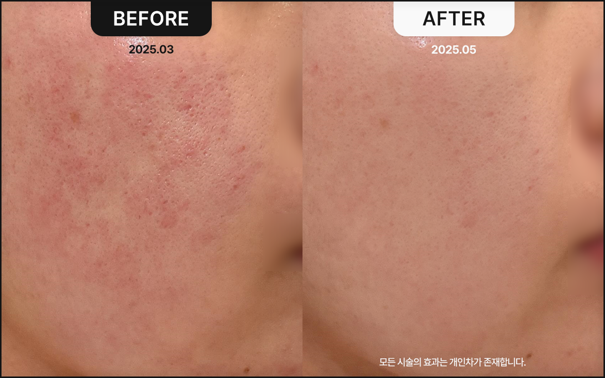
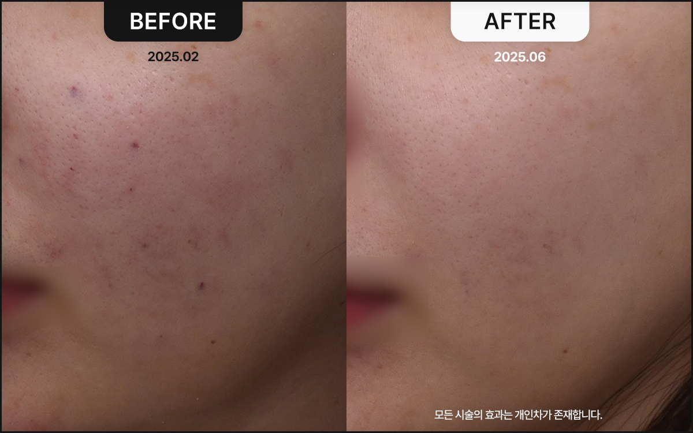
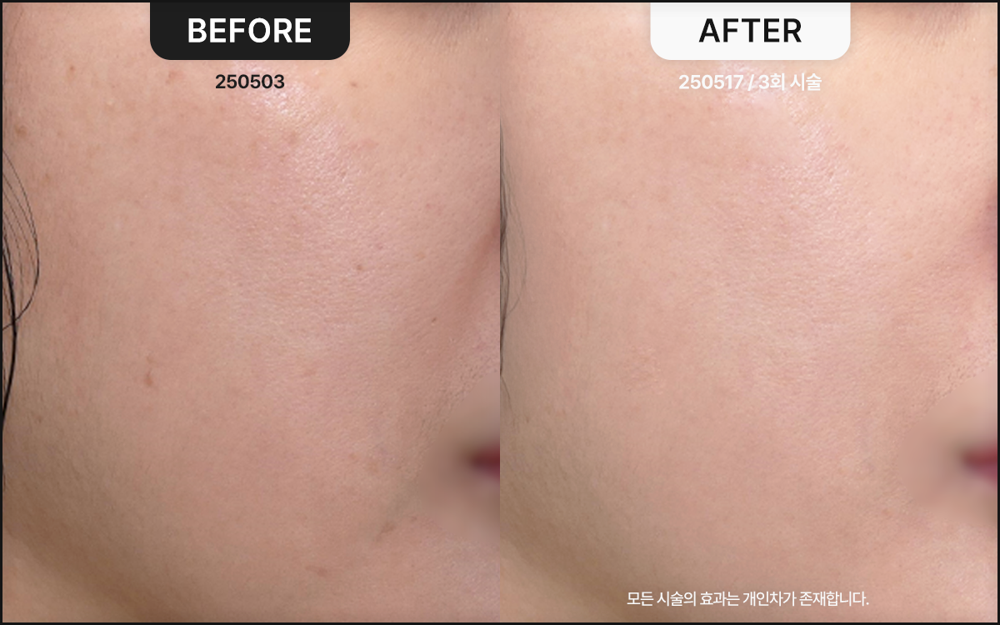
기미색소 컨택터란?
PDRN 성분을 대폭 강화해 새롭게 완성한 메디컬블룸 기미색소 컨택터 ver.2는 멜라닌 생성을 억제하고 기미·색소침착을 개선하여 물광 피부와 밝은 안색을 만들어주는 스킨부스터입니다.

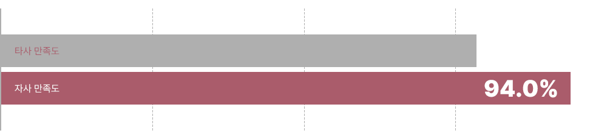
확연한 시술 전후의 차이
기미색소 컨택터의 효과를 확인해보실 수 있습니다.
많은 후기 와 만족도 가 증명하는 기미색소 컨택터의 효과 시술 만족도 기미색소 컨택더를 경험한 분들의 전반적인 시술 만족도 (2024.09) 추천 의향 기미색소 컨택터를 경험한 분들의 '추천 의향' 답변 평균 (2024.10)
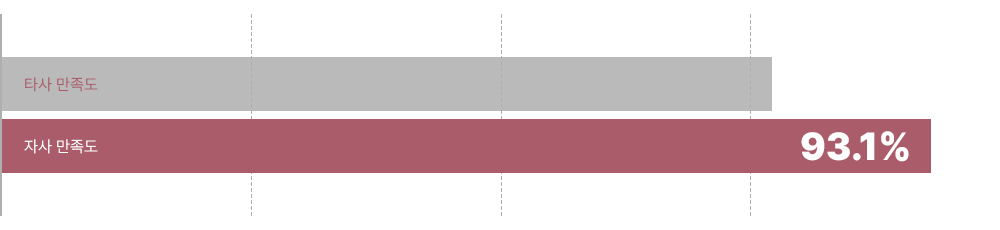
기미색소 컨택터, 이런 분들께 추천드립니다.
색소침착과 기미가 심해 밝은 피부 톤을 되찾고 싶으신 경우 피부 톤이 칙칙해 보이거나 광채 없는 피부가 고민이신 경우 피부를 하얗게 하고 싶지만 부작용이 걱정되는 경우 충분한 수분 공급과 함께 물광 피부를 원하시는 경우
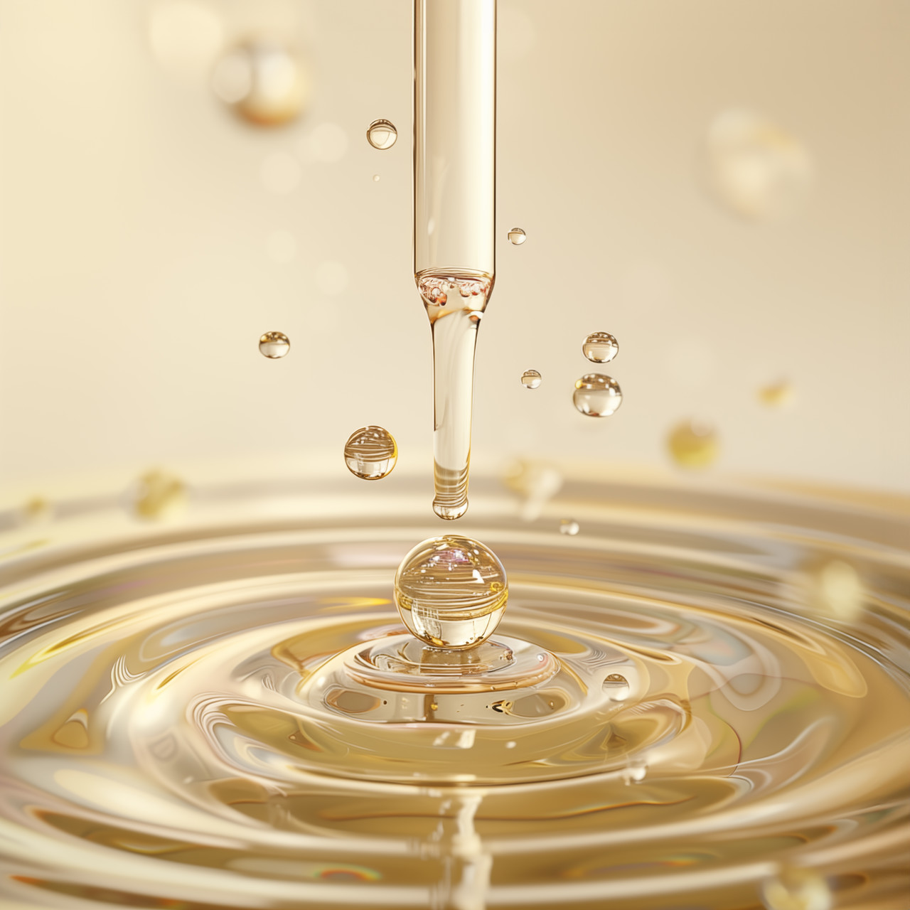
기미와 색소침착 치료를 위한 선택 시술
기미색소 컨택터는
기미와 색소침착 개선에 도움을 주고 멜라닌 생성 환경을 조절해 칙칙해진 피부 톤을 균일하게 정돈합니다.
피부 속부터 차오르는 듯한 광채로 자연스럽고 건강한 물광피부를 만들어줍니다.
자극적이지 않은 자연 유래 성분을 사용하여 민감한 피부에도 안전하게 적용할 수 있습니다.
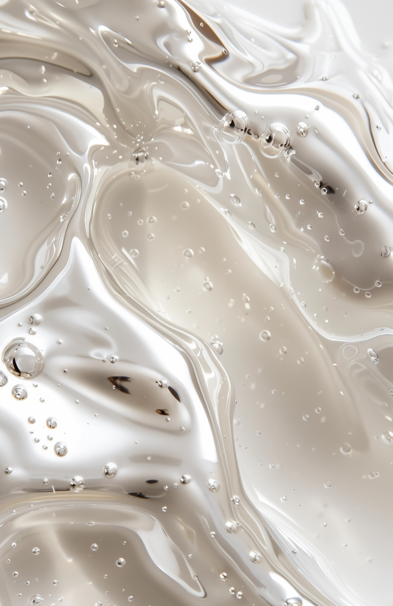
기미색소 컨택터는 이렇게 사용합니다
칙칙한 피부 톤을 균일하게 개선 천연 항산화 성분이 멜라닌 생성을 억제하고, 피부 톤을 한층 더 밝게 만들어 줍니다.
칙칙한 피부를 환하게 바꾸어 자연스러운 광채를 선사합니다.
수분 공급을 통한 물광 효과 피부에 깊은 수분을 공급하여 피부 속부터 촉촉하게 만들어 물광 피부 효과를 제공합니다.
탄력 있는 피부와 자연스러운 윤기를 유지하게 도와줍니다.
기미·색소 개선을 통한 맑은 피부 기미와 색소침착을 케어하여 칙칙해진 피부 톤을 맑고 균일하게 정돈합니다. 전체적인 안색을 개선해 맑고 생기 있는 피부로 유지할 수 있도록 돕습니다.
시술 당일에도 일상 생활이 바로 가능한 시술 시술 후 티가 날까봐 고민하시나요?
기미색소 컨택터는 시술 당일에도 부담 없이 일상 생활이 가능한 시술입니다.
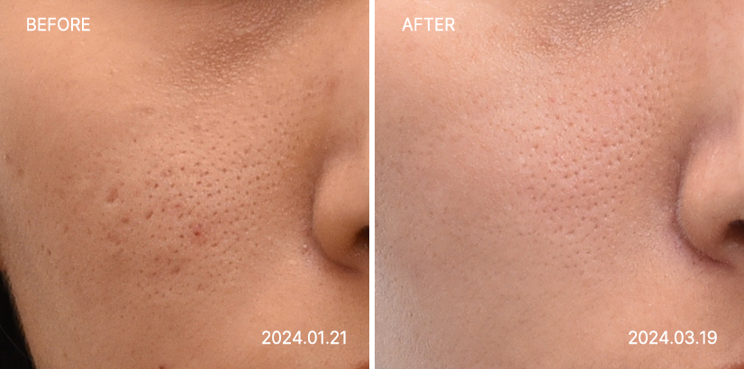
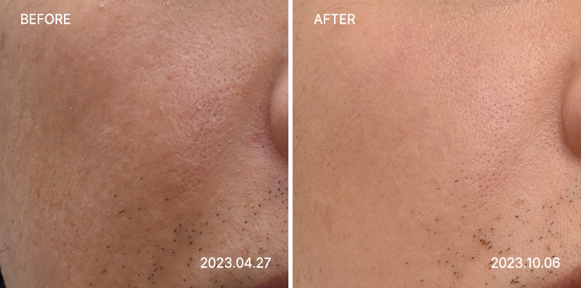
칙칙한 피부 톤을 균일하게 개선
천연 항산화 성분이 멜라닌 생성을 억제하고,
피부 톤을 한층 더 밝게 만들어 줍니다.
칙칙한 피부를 환하게 바꾸어 자연스러운 광채를 선사합니다.
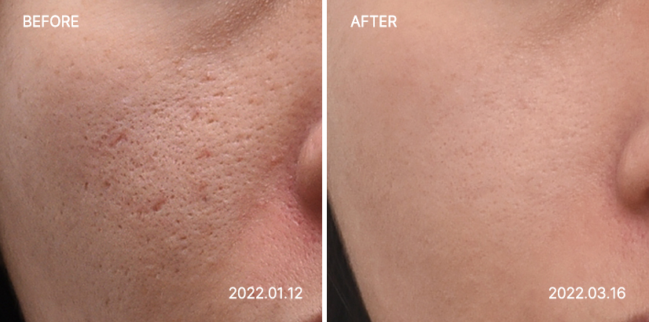
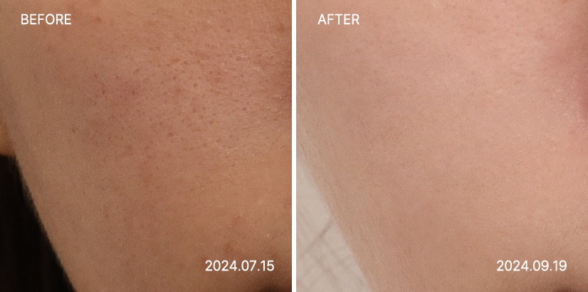
수분 공급을 통한 물광 효과
피부에 깊은 수분을 공급하여 피부 속부터
촉촉하게 만들어 물광 피부 효과를 제공합니다.
탄력 있는 피부와 자연스러운 윤기를 유지하게 도와줍니다.

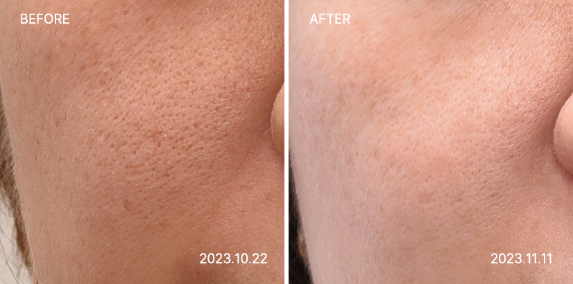
시술 당일에도 일상 생활이 바로 가능한 시술
시술 후 티가 날까봐 고민하시나요?
기미색소 컨택터는 시술 당일에도 부담 없이 일상 생활이 가능한 시술입니다.

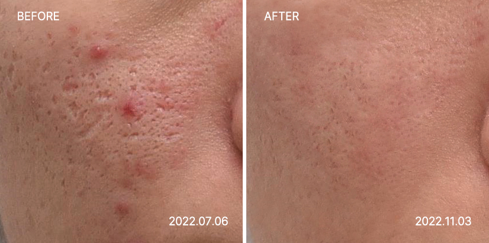
기미·색소 개선을 통한 맑은 피부
기미와 색소침착을 정밀하게 케어해 칙칙해진 피부톤을 맑고 균일하게 개선합니다.
전체적인 안색을 환하게 밝혀 깨끗하고 생기 있는 피부 컨디션을 유지하도록 돕습니다.
시술 후 얼굴이 붉어지거나 하진 않나요?
시술 후 붉어짐이 거의 없으며,
민감한 피부에도 안전하게 적용 가능 합니다.
피부 톤이 얼마나 하얗게 되나요?
개인의 피부 상태에 따라 다르지만 멜라닌 억제와 수분 공급을 통해 점차적으로 더 환하고 밝은 피부 톤을 기대할 수 있습니다.
몇 회 정도 받아야 효과가 나타나나요?
최소 3~5회 시술을 권장하며, 매 회차마다 피부가 점차적으로 밝아지고 윤기가 생깁니다.
다른 색소침착 문제에도 적용 가능한가요?
네, 기미뿐만 아니라 자외선 노출이나 피부 손상으로 인한 다양한 색소침착 문제에도 효과적입니다.
기미색소 컨택터


가장 건강한 아름다움을 드릴
메디컬블룸한의원의 약속
1:1 피부 컨디션 & 디자인 상담
원장님과의 충분한 상담을 통해 개인의 고민 부위와 피부 컨디션, 피부 특성을 꼼꼼히 체크합니다. 고객님이 추구하는 아름다움과 얼굴 상태를 모두 고려하여 가장 알맞는 퍼스널 페이스 디자인을 제안해드립니다.
한의원장 2인의
특별한 전담관리
상담부터 시술까지 내 가족, 지인의 피부라 생각하며 누구보다 꼼꼼하고 섬세하게 관리합니다. 피부 미용에 한의학적 시선을 접목, 혈맥과 근육 자극을 더하여건강과 아름다움 모두를 달성합니다.
부작용 없는 건강한 아름다움
고객님의 피부 건강과 만족도를 가장 중요하게 여깁니다. 시술 후의 마음 아픈 부작용이 없도록 검사와 상담 단계에 만전을 기하며 약침과 한약의 재료는 우리 몸에 순한 천연 한약재만을 고집합니다.
정품 프리미엄 기기와
정량 시술
메디컬블룸이 고객님께 사용하는 모든 기기와 약품은 정품으로, 내 얼굴에 더하지도 덜하지도 않은 맞춤 정량으로만 시술합니다.